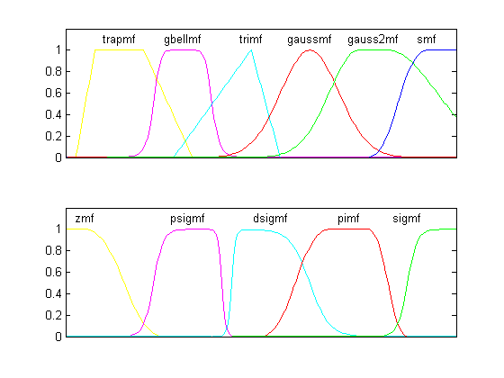

Membership Function Gallery
This demo displays 11 MF's supported in the Fuzzy Logic Toolbox™.
Contents
Typical Shapes of the Membership Functions
DSIGMF, GAUSS2MF, GAUSSMF, GBELLMF, EVALMF, PIMF, PSIGMF, SMF, TRAPMF, TRIMF, ZMF
FigTitle = 'Membership Functions Gallery'; fig = findobj('Name',FigTitle); if isempty(fig) fig = figure('Unit','pixel',... 'Name',FigTitle,... 'NumberTitle','off'); % V5 default color colordef(fig, 'black'); end set(0,'Current',fig) x = linspace(-20, 20, 201); mf_type = str2mat('trapmf', 'gbellmf', 'trimf', 'gaussmf', 'gauss2mf', 'smf'); mf = zeros(size(mf_type, 1), length(x)); param = [-19 -17 -12 -7; 3 4 -8 0; -9 -1 2 0; 3 5 0 0; 3 10 5 13; 11 17 0 0]; mf = evalmmf(x, param, mf_type); subplot(211); plot(x, mf'); axis([min(x) max(x) 0 1.2]); text((param(1,2)+param(1,3))/2, 1.1, ... deblank(mf_type(1,:)), 'horizon', 'center'); text(param(2,3), 1.1, ... deblank(mf_type(2,:)), 'horizon', 'center'); text(param(3,2), 1.1, ... deblank(mf_type(3,:)), 'horizon', 'center'); text(param(4,2), 1.1, ... deblank(mf_type(4,:)), 'horizon', 'center'); text((param(5,2)+param(5,4))/2, 1.1, ... deblank(mf_type(5,:)), 'horizon', 'center'); text(param(6,2), 1.1, ... deblank(mf_type(6,:)), 'horizon', 'center'); set(gca, 'xtick', []); mf_type = str2mat('zmf', 'psigmf', 'dsigmf', 'pimf','sigmf'); mf = zeros(size(mf_type, 1), length(x)); param = [-18 -10 0 0; 2 -11 -5 -4; 5 -3 1 5; 0 7 11 15; 2 15 0 0]; mf = evalmmf(x, param, mf_type); subplot(212); plot(x, mf'); axis([min(x) max(x) 0 1.2]); text(param(1,1), 1.1, ... deblank(mf_type(1,:)), 'horizon', 'center'); text((param(2,2)+param(2,4))/2, 1.1, ... deblank(mf_type(2,:)), 'horizon', 'center'); text((param(3,2)+param(3,4))/2, 1.1, ... deblank(mf_type(3,:)), 'horizon', 'center'); text((param(4,2)+param(4,3))/2, 1.1, ... deblank(mf_type(4,:)), 'horizon', 'center'); text(param(5,2), 1.1, ... deblank(mf_type(5,:)), 'horizon', 'center'); set(gca, 'xtick', []);